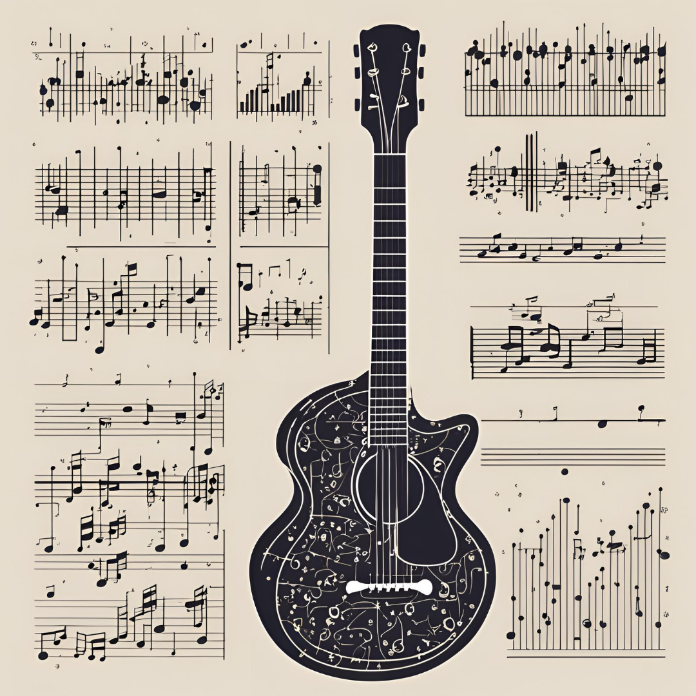

Análisis de Datos con R Aplicado a Políticas Públicas
¡Bienvenid@!

Bienvenid@ a este recurso en línea gratuito en el que aprenderás a usar el software R desde cero. El valor agregado de este recurso frente a otros libros físicos y online que enseñan cómo programar en este lenguaje radica en que:
Está diseñado para aprender haciendo, mediante la ejecución de código en línea sin necesidad de instalar el software en tu computador; y
Los ejemlos, ejercicios, y datos empleados están enfocados en responder preguntas relevantes para la política pública, sobre todo en las áreas que más urgen a la ciudadanía Chilena, como por ejemplo, la seguridad ciudadana.
Cuando empecé a escribir este libro tenía dos objetivos principales en mente. En primer lugar, buscaba un medio digital y abierto para enseñar los fundamentos de la ciencia de datos desde un enfoque práctico, utilizando R y datos relevantes para el análisis de políticas públicas.
En segundo lugar, buscaba algo un poco más ambicioso: Enriquecer la variedad de recursos en línea y de libre acceso para aprender R, pero desde una perspectiva orientada a la resolución de problemas concretos y con foco en temáticas prioritarias para las políticas públicas, con el fin de formar a futuros analistas en políticas públicas, o enriquecer el capital humano y conocimiento de quienes ya se encuentren insertos en el mundo público.
Desde que conocí el lenguaje de programación R en el año 2020, he estado en una constante búsqueda de soluciones concretas que puedan dar respuesta a las preguntas de investigación o solicitudes emergentes que surgen cuando uno trabaja en el sector público.
Si bien en este largo y constante camino de aprendizaje he encontrado una amplia variedad de recursos que me han orientado hacia una respuesta concreta, o bien, me han hecho pensar en modelos o esquemas mentales sobre cómo resolverlos, los investigadores y analistas del sector público muchas veces se encuentran con problemas que requieren una respuesta inmediata pero fundada.
Quienes comparten mi experiencia, es muy probable de que hayan presenciado que muchas de estas decisiones relevantes se toman en base a información que implica un nivel importante de precisión y procesamiento; y esto, al realizarse mediante programas clásicos como Excel, implica un riesgo para su reproducibilidad, trazabilidad, e incluso la precisión de los análisis realizados.
Siendo transparente, estoy lejos de creer que R es el medio correcto a emplear para resolver todas estas preguntas o problemáticas los empleados púbicos enfrentan. Muchas veces, la gestión pública y el rol del analista que insuma la toma decisiones en la materia requiere simplemente de habilidades como la redacción de informes o producción de tablas, las cuales pueden realizarse de manera más eficientemente directamente desde un documento de Microsoft Word o Excel.
Sin embargo, estoy convencido de que muchas de las tareas y la producción de conocimiento basado en información, así como la evaluación de los programas públicos, puede eficientarse mediante el uso de softwares avanzados de análisis de datos como R o Python. En este sentido, si buscamos mejorar el bien común mediante la implementación de políticas públicas pertinentes y bien diseñadas, considero menester que quienes trabajamos con información pública podamos perfeccionar nuestras habilidades para surfear las olas en las que navega el quehacer público.
Por ejemplo, pensemos en la siguiente y aparentemente sencilla pregunta en el marco de un proyecto de instalación de cámaras con un presupuesto predefinido:
¿Dónde ubicar las cámaras?
Antes dede responder esta pregunta, considero que es fundamental definir cuál es el objetivo del proyecto ¿Disminuir los delitos? ¿Contar con medios probatorios frente a un eventual delitos?¿Aumentar la percepción de seguridad de los vecinos? Evidentemente, para hacer preguntas correctas o diseñar buenas políticas públicas no es necesario contar con habilidades de programación.
Dependiendo del objetivo, los criterios para responder a esta pregunta (dónde instalar las cámaras) puede llevar a respuestas totalmente distintas, que por lo demás, generarán diferentes impactos en la población. Sin embargo, una vez que tengamos definido el objetivo, podemos utilizar R u otro software similar para responder a la pregunta inicial de la mejor manera posible, por ejemplo, analizando los lugares con mayor concentración del delito y a partir de este criterio definir su ubicación.
El mensaje detrás de este ejemplo es que no basta con analizar datos y encontrar los mejores modelos estadísticos, sino que importa mucho definir la pregunta correcta y los objetivos del análisis. En sentido, R sería nuestra tabla que nos permite surfear la ola (la pregunta), pero no nos dirá cuál ola debiésemos tomar y cuál dejar pasar.
Si bien no hay respuestas únicas y el criterio experto del analista o del equipo que esté involucrado en la toma de decisión es sumamente relevante, aprender mediante ejemplos aplicados con datos reales puede promover la toma de decisiones basada en evidencia, al mismo tiempo que se puede dar una respuesta rápida a la premura que exige la gestión pública. Del mismo modo, exponer los criterios fundados que guiaron el análisis y la toma de decisión puede fomentar el uso de herramientas concretas para mejorar el bienestar de la población mediante métodos robustos.
A medida que los estudiantes se adentren en el uso de R, se darán cuenta de que detrás de este software hay una extensa comunidad que impulsa su desarrollo. Consecuentemente, existen muchos recursos gratuitos y en línea para aprender R. Sin embargo, esa misma abundancia puede resultar abrumadora para quienes recién comienzan, pues surgen preguntas como:
¿Qué recurso debería elegir? ¿Por qué no entiendo todo lo que hace este código? ¿Cómo sé si este material es adecuado para mi nivel? ¿En qué momento voy a poder aplicar esto a mi trabajo?
Estas mismas inquietudes me acompañaron cuando inicié mi camino en la programación, y, a decir verdad, aún me acompañan cuando busco bibliografía o recursos online en nuevas áreas de aprendizaje.
Por eso, en este libro he optado por un enfoque centrado en la resolución de tareas y problemas. Así, el aprendizaje no solo se basa en ejecutar código, sino también en encontrar soluciones y responder preguntas reales que los estudiantes probablemente enfrentarán al trabajar con datos. Muchos textos similares argumentan que la mejor manera de aprender a programar es simplemente programando. Si bien, personalmente comparto esta idea, estoy convencido de que ese camino se hace más efectivo cuando le encontramos un por qué o un para qué a nuestras acciones.
En un mundo donde la información abunda pero el tiempo escasea debido a nuestras múltiples responsabilidades laborales y personales, contar con un recurso que facilite resultados prácticos y aplicables es invaluable. Mi intención es que este material no solo sea útil en proyectos académicos, sino también en distintos entornos de trabajo, promoviendo soluciones eficientes y basadas en datos.
Así, este libro es el resultado de más de cinco años de aprendizaje adquirido a partir de mi interés en abordar desafíos laborales y de investigación. En el primer año en que aprendí a usar R, recuerdo las intensas horas de dedicación intentando solucionar errores a los que no lograba encontrar su origen. Sin duda, la curva de aprendizaje para alguien que no es programador es bastante inclinada y requiere de un tiempo importante de adaptación.
Pero como todas las disciplinas, la práctica permite sortear tales dificultades y afinar el ojo de los errores que, sin lugar a duda, ocurrirán en este camino de aprendizaje. Y ese proceso se hace mucho más llevadero si es que contamos con recursos que nos den luces sobre cómo enfrentar tales complicaciones.
De este modo, el propósito final de este libro es ofrecer un recurso didáctico que permita a profesionales, estudiantes y futuros analistas o investigadores, motivados por contribuir al bien común, contar con una herramienta que mejore su capacidad para tomar decisiones informadas en el ámbito de las políticas públicas, aprovechando el poder de los datos de manera inteligente y estratégica.
Agradecimientos
Quiero agradecer a todas las personas que hicieron posible este proyecto. Son muchas, ya que cada experiencia e interacción ha enriquecido mi camino. Sin embargo, quisiera empezar por mi familia. Sin el apoyo incondicional de mis padres, el investigador curioso que soy hoy probablemente nunca habría existido. Su amor, su estímulo constante y su enseñanza para preocuparme por los demás y por aprender cosas nuevas son el núcleo de esta iniciativa.
A mi pareja, por su apoyo incondicional, quien siempre encuentra la manera de elevar mi ánimo y reforzar mi confianza cuando más lo necesito, además de generar en mi admiración por su talento y contribución las temáticas ligadas al desempleo nacional.
A mis jefes y compañeros de trabajo, especialmente aquellos del Departamento de Evaluación de Políticas Públicas de la Subsecretaría de Prevención del Delito: Cristian Crespo y Gabriel Moraga, quienes fueron fundamentales en mi formación como investigador.
A mis profesores del Diplomado en Ciencia de Datos para Políticas Públicas, del cual ahora soy parte como docente, y en particular a Pablo Aguirre, quien confió en mis capacidades y me dio la oportunidad de ser su ayudante.
Y, finalmente, a todas las personas que han dejado una huella positiva en mi vida, incluso con una breve conversación de pasillo. Cada una de esas personas ha contribuido, de alguna manera, a que este proyecto sea una realidad.